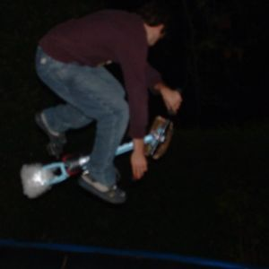 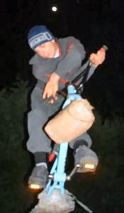 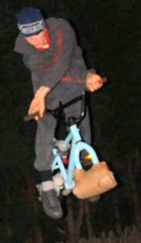 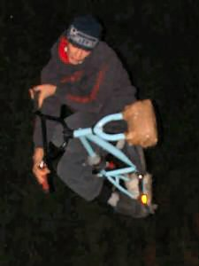 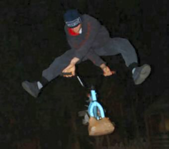 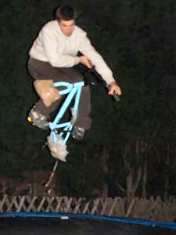 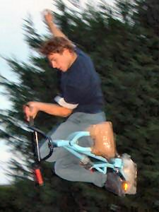 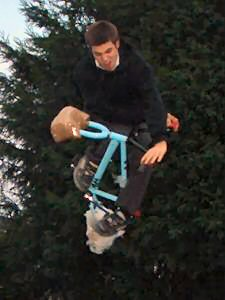 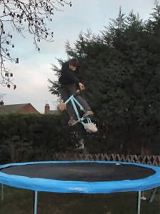 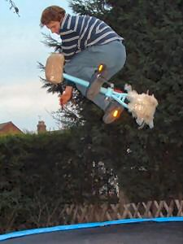 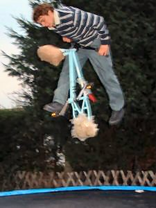 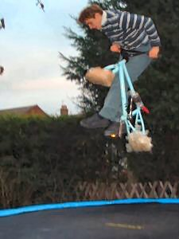 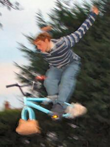 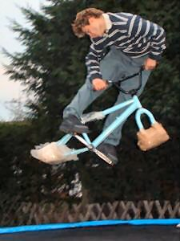 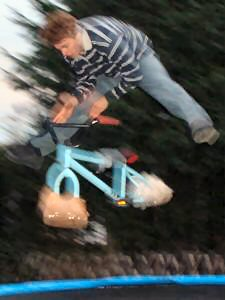 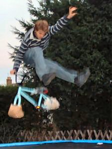 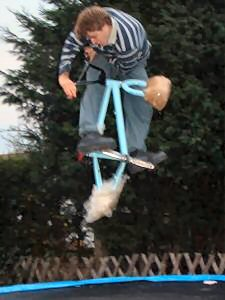 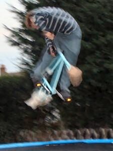 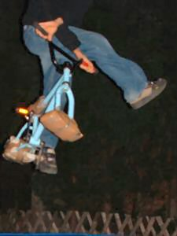 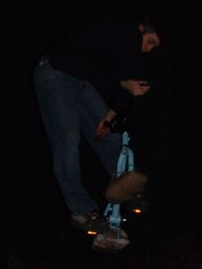 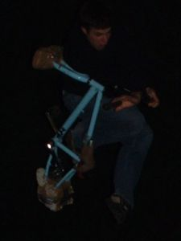 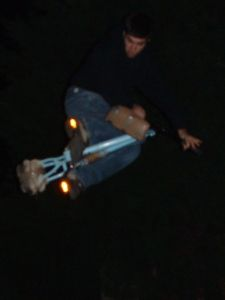 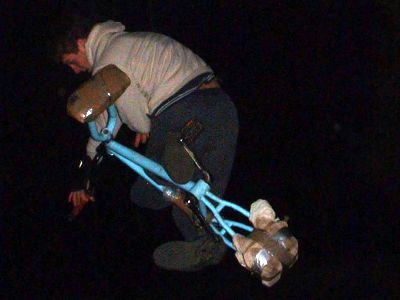 |
||
| lest we forget. pictures from kiddy jam in the summer and trampoline jams in the winter. you can see the progression of the tables above and have some interesting pictures below. most of the pictures of tim are taken pre limb snap as he can't really bounce at the moment. he could never land that one handed table though. and that guy below with the camera looks bad. kiddy jam was a fun day. it was so hot. it's hard to remember now how one day could be so hot. i can remember that i was hot i just can't imagine it now. try to imagine it being hot and dusty. that's why you have to go and dig now. i like the blurryness of these pictures. they are still in focus but blurred. it's a lot easier to take pictures in the sun than in the dark or in the winter. winter sucks, which is why trampolines are good. | ||
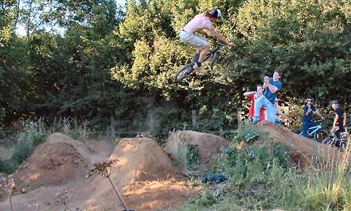 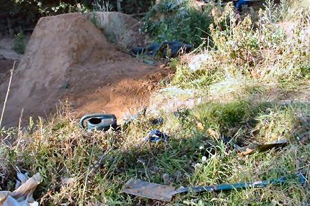 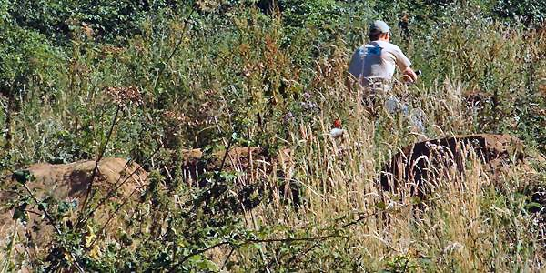 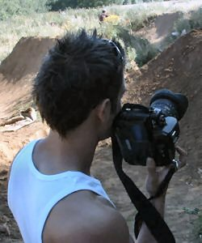 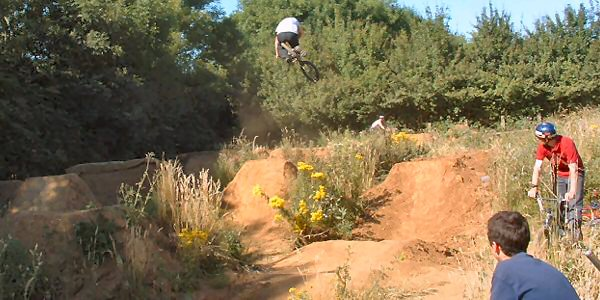 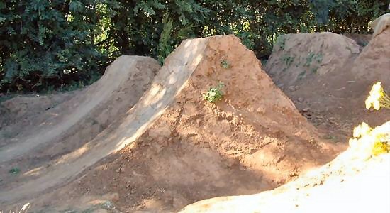 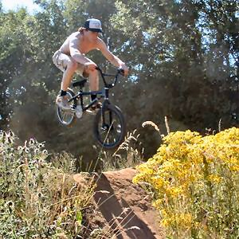 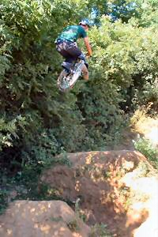 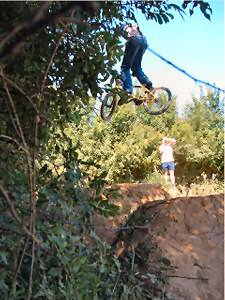 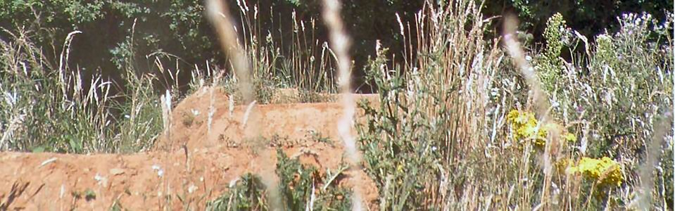 |
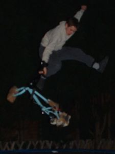 a trampoline is definitely a good investment. firstly you can use it all year round, and as long as it's not actually raining you can go on it as long as you keep the cover on, so it's dry. they really aren't expensive either. not when you compare them to bike parts, and they provide hours of fun. they are much less maintenance than trails too. they aren't as much fun but it's good training. keep the cranks on the bike so the tricks feel more real.don't buy a trampoline because i told you to or because its fashionable. it's all about the fun. and the value for money. and the convenience. it's closer to your house than the trails. oh and another thing, you don't get so badly injured by messing up on a trampoline. so it's good. you just need a bit of garden. kiddy is a fun place to ride. i want to go there again this year. maybe have a kiddy holiday and go and fix some jumps and then ride them. i guess i might as well just go to some nearer trails to do that though. i guess what's so good about kiddy is that no-one goes there except riders. you don't get annoying dog walkers. banstable trails are right by a hocky pitch and they have a hocky tournaments at the weekend so there are caravans and cars and tents all pitched around the jumps. people cars nearly get scratched and stuff. that's why kiddy is good. and that's why trampolines are good.
|
|